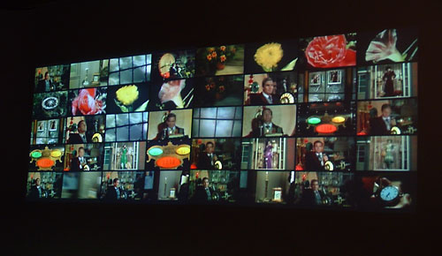

Nate Harrison - The (Quick)time Machine

The (quick) Time Machine is a re-presentation of the 1960 film adaptation of H. G. Wells’ The Time Machine. The film was separated into every one of its ‘hard’ edits, which were then made into video loops. Each loop was subsequently sequenced according to the original storyline across a 40-block grid, read left to right, top to bottom. At any given moment the audio is in sync with one of the grid spaces, until that space starts looping, at which point the adjacent right block begins, with the audio syncing to it. When the grid fills up the process starts over in the top left corner. The video, through 1000 edits over the length of the original film, ends in the bottom right hand corner. As the narrative of the film is revealed, so too is its edit structure. The result is akin to transforming a film back into its storyboard.